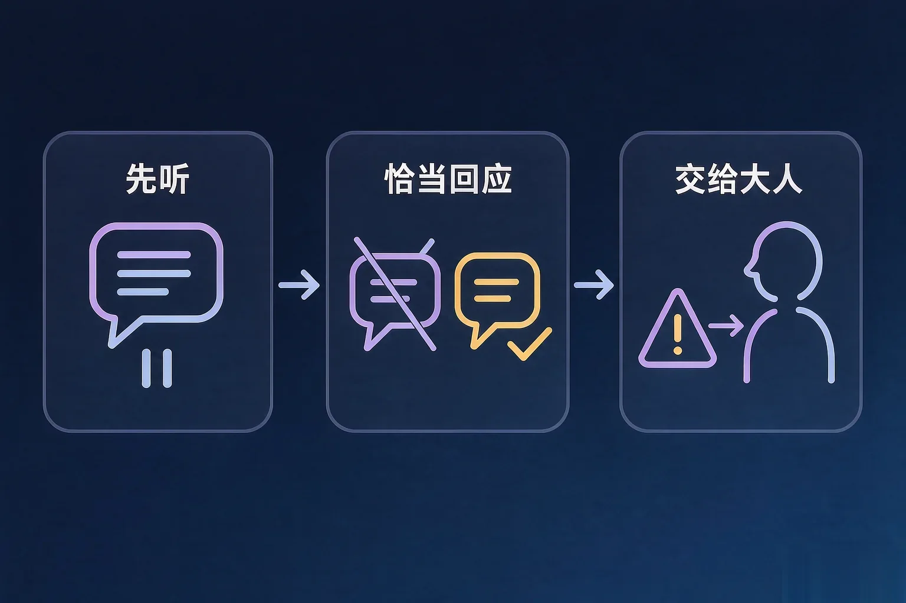
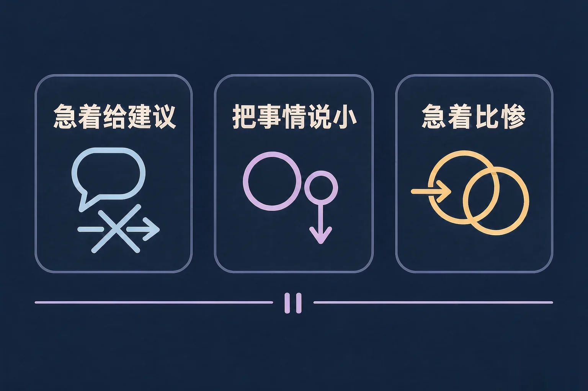
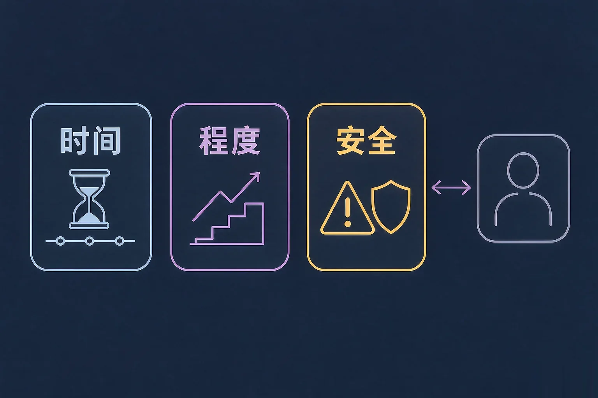

Gallery
v1.0.0 · skill v7.22.0
高中高二 · 人际交往
想帮上忙，和真的帮上忙，中间差了什么？

选一个最贴近你最近状态的困惑，后面的内容都会围着它展开。
选择或输入后，这节课会围绕你的问题展开。
先凭直觉选一个，选完立刻看到解释——错了也没关系，正好知道要重点听哪里。
1. 朋友跟你说他这次考砸了，特别难受。下面哪一种回应更可能让他愿意往下说？
先把他说的事接住，他才知道往下说不用先解释自己。错因提醒：常见错误是误认为越快给出办法越有用——话还没说完就递办法，对方往往先要花力气跟你解释一遍感受。
2. 下面哪一条更像「先听」该有的样子？
重复一小句，是让对方知道你听清了；问一句要不要，是把决定权交回给他。错因提醒：容易把「比惨」搞混成共情——讲自己更惨的经历，常常会让对方把话收回去。
3. 关于「告诉老师或家长」，下面哪一种说法更合适？
把超出自己能力的事交给能处理它的人，是对同伴的照顾，不是出卖。错因提醒：误认为任何情况下都必须替对方保密，会让一件本来可以早点处理的事拖得更久。
有三种回应，出发点是好的，却常常帮不上忙。先认出它们，再换成一句能接得住的话。
为什么要先学这个？你已经知道朋友难受时该关心他；但话一急，往往先递办法、先说这没什么；所以先把顺序换过来——先听完，再问他要不要。
误认为先听就是不说话、不给建议。其实顺序换一下就行：先听完，再问他要不要听你的想法。给建议不是错，抢在他讲完之前给才是。

🔍 深层理解 换个角度再看一遍这件事，看看能不能说出背后的原理。
解释它：为什么抢着给建议反而帮不上？因为对方开口的时候，要的常常是把话说出来，而不是马上解决问题。
比较它：「别难过了」和「听起来这次挺让你难受的」，长度差不多，但后者把他的话接住了，前者让他把话吞回去。
迁移它：这一套不只对朋友管用。家里人抱怨的时候、同学在群里发牢骚的时候，先复述一句再问要不要，同样管用。
先选一个你真的遇到过的情境，再把两种回应各点开一次，比较它们分别把后面的对话带到哪里。
回应 A
回应 B
陪伴有它的位置，也有它的边界。下面三条线，只要碰到一条，就该交给能处理它的人。

误认为「答应过保密就不能说」。保密的前提是这件事还在你们能处理的范围内；一旦碰到安全，先保证他安全，再解释你为什么要说。
八个情形，每个选一个做法。选完会给出解释——选转给大人，不等于你不管他了。
写下来，留给自己：
如果以后真的遇到要交给大人的情形，你打算怎么跟同伴开这个口？写一句你大概会说的话。
情境：老师布置了一个小组调查，四个人，两周后交。上一次你们拖到最后一天才动手。
两个方向都容易走偏：一种是不分工、自己全做完，事是交了，关系却生分了；另一种是把互评说成对人的评价，比如你会不会做图啊——对方第一反应是辩解，改的事就往后放了。
把期待放在合适的位置：这些做法不保证每次合作都顺利，也不保证每个人都会配合。它们能做的是：让活有清楚的分界，让话有地方可以说。
先凭直觉选一个，选完立刻看到解释——错了也没关系，正好知道要重点听哪里。
1. 「这有什么大不了的，我早就经历过了」——这句话最需要改的地方是：
把事说小，通常会让对方把话收回去。换成先复述一小句，往下才有余地。错因提醒：常见错误是误认为讲自己的经历能让对方好受，其实那常常把话头转到自己身上。
2. 关于「先听」，下面哪种理解更合适？
给建议不是错，抢在他讲完之前给才是。错因提醒：容易把「先听」搞混成「不能给建议」，于是明明有话也不说，反而让对方觉得你在敷衍。
3. 同学说他连着两个星期吃不下、睡不着，还越来越瘦。下面哪种做法更合适？
时间够久、已经影响到吃饭和睡觉，这两条都碰到了，就该交给能处理它的人。错因提醒：误认为替对方保密才是讲义气，结果常让一件本来可以早点处理的事拖得更久。
五句在小组里很常听到的话，每句选出那个能接着往下做的说法。留意哪一种会让对方愿意再改一次。
写下来，留给自己：
给最近一次合作里的一位组员，写一句真实的互评：哪一部分帮到了我、哪一处我跟不上、下一步我建议怎么改。
先凭直觉选一个，选完立刻看到解释——错了也没关系，正好知道要重点听哪里。
1. 晚自习后，同学在走廊跟你说：我真的不知道该怎么办了。这时更合适的第一步是：
先接住，再问要不要——把决定权交给他。错因提醒：常见错误是误认为必须马上给出方案才算帮上忙，其实很多时候他只差一个能把话说出来的人。
2. 小组里有一位同学三次碰头都没到，任务后天要交。下面哪种做法更合适？
说清事实和时间，是让活能往前走的第一步。错因提醒：容易把「说清情况」搞混成「告状」——前者说的是那部分活，后者说的是那个人。
3. 你发现同学最近状态一直不好，还说过不想来学校。你打算怎么做？
陪伴和转给大人可以同时做，先说不等于出卖。错因提醒：误认为只有对方同意才能告诉老师，可有些事等不到他同意；先保证他有人帮，再解释你为什么说。
回到开头那个时刻：朋友说他考砸了，话到嘴边停住的时候，你不必想出一句完美的话。先说一句听起来你挺难受的，再问他要不要说说——门就还开着。
记忆锚点：三句话帮你记住——先接住、再问要不要、扛不住就找人。
给别人讲一遍：请用「接住、要不要、找人」这三个词，说说你上一次本来可以怎么回应一个来找你说话的同学。
三层练习，做完第一、二层就算通关；第三层留给愿意继续探索的同学。
⭐ 基础巩固（必做）
⭐⭐ 能力应用（必做）
⭐⭐⭐ 迁移挑战（选做）
左边是学它之前要先会的，右边是学会之后可以继续探索的，下面是同一领域的伙伴知识。
图谱正在加载：首次进入需下载知识索引（约 1–3 秒），加载完成后本行会自动消失。